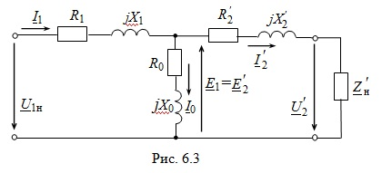

На рис. 6.3 представлена полная электрическая схема замещения трансформатора с элементами:R1 и X1 – активное и индуктивное сопротивления первичной обмотки; R'2 и X'2 – приведённые к числу витков первичной обмотки активное и реактивное сопротивления вторичной обмотки; R0 – активное сопротивление, соответствующее магнитным потерям в стали; X0 – индуктивное сопротивление, обусловленное основным магнитным потоком Ф.
